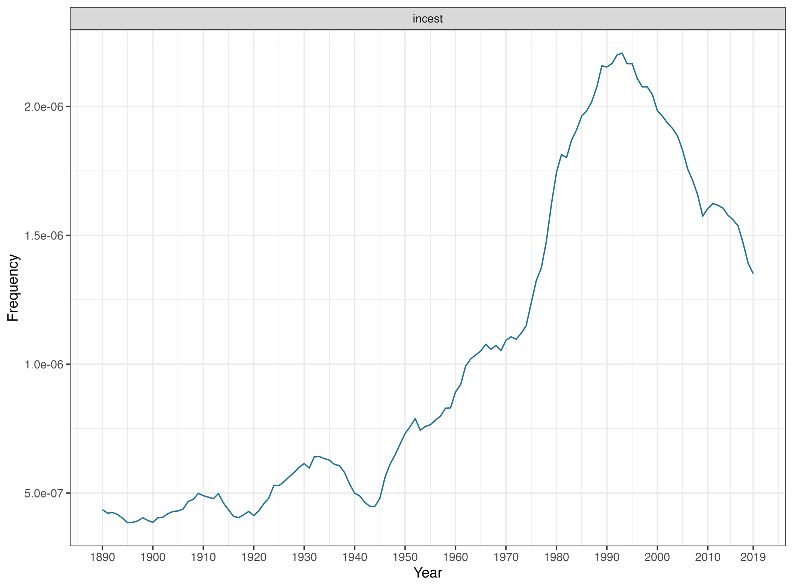

1 Introduction
It is the plot of countless romantic novels and movies that the childhood sweethearts who grew up together are unable to become lovers. It seems to be a relentless metaphor for revealing a part of our profound human nature - the inability to be sexually attracted to peers we grew up with. This effect is known as the Westermarck effect (Westermarck 1891, 1922). However, the effect of this hypothesis is far from infallible. For more than 100 years, scholars have continually challenged and defended the hypothesis. These debates have advanced biology, ethics, and sociology.
Leaving aside the heart-wrenching plots and rhetorical devices of novels and movies, the age-old ethical question behind Westermarck’s hypothesis lies - why can we avoid incest? Throughout the ethical history of humankind, incest has been considered the most profound taboo in most times and places, and both Christianity and the Chinese Confucian tradition describe incest as an iniquitous sin (Wenham 1979; Hong et al. 1993), as in the Old Testament, Leviticus 18 is specifically admonishing the faithful never to commit incest 1. The incest taboo is almost certainly the oldest and most unique of all human taboos and continues to have a profound impact on human society today. In some religious Islamic countries, such as Saudi Arabia, incest between siblings is often punishable by death and is carried out through highly religious rituals (e.g. stoning). A noteworthy exception is the custom of incest in some ancient religions or cultures, such as Zoroastrianism and the sibling marriages of the Ptolemaic dynasty in ancient Egypt (Wolf 2005; Ager 2006). It must be noted, however, that such cases are rare and often have deep ritual or political implications. For example, the ancient Persian Zoroastrianism practice of holy matrimony (Xwedodah), a rite which is considered one of the most pious actions possible in the Persian canon, is often restricted to the ruling class and is considered to be somewhat of a Sacred taboo(Scheidel 1996). Modern gene biology further points to inbreeding results in homozygosity, which can increase the chances of offspring being affected by recessive traits. In extreme cases, this usually leads to at least temporarily decreased biological fitness of a population, which is its ability to survive and reproduce(Lynch and Walsh 1998; Nabulsi et al. 2003). Based on this scientific fact, many nations have introduced laws prohibiting consanguineous marriages (Bratt 1984; Ottenheimer 1996). For example, incest is a felony in most states in the United States and is included in the criminal codes of most Western countries (Hughes 1964; A. P. Turner 2008).
It is undeniable that the incest taboo has become a significant component of modern universal values and that incest tends to create moral panics (e.g., child sexual abuse) in modern societies (Jenkins 2004; Soothill and Francis 2002). Figure 1 shows that the discussion of incest has not declined with the modern world, but on the contrary, it has risen since World War II and reached its peak in the 1990s. Yet whether the incest taboo is a biological evolutionary mechanism or a socio-cultural mechanism is still under fierce debate. This involves the fundamental propositions of the Westermarck hypothesis (discussed in more detail below). When we Look back on this over 100-year debate, both sides have been dominant at one time or another. These changes are dynamic and are constantly updated with changes in various aspects of humanity (technology, social movements) (Marcinkowska, Moore, and Rantala 2013).

2 Methodology
This study will examine the controversy primarily using literature analysis. I will rely on the valuable literature accumulated over the years by both sides of the debate, especially some of the literature on nodal significance. For example, two books published by the bioprioritarian bloc (Wolf 2005, 2014) as well as three famous studies, as well as literature from the culture-prioritarian bloc at different times.
I have analysed the data by drawing on the Technology Controversy Mapping framework proposed by Moreira (Moreira 2015; Sismondo 2010). The Technology controversy mapping model is a theoretical framework for analysing and explaining the complex interactions between science, technology and society. Originating from the Science, Technology and Society Studies (STS) field, the model emphasises that the interactions between technological developments and social structures are mutually reinforcing and co-formative. It has been used to understand the factors that promote or impede cognitive consensus within the scientific community. It has since evolved into a technique for analysing the dynamic interplay between knowledge generation, technological innovation, and social change. It draws primarily on publicly available documents and aims to identify clustered relationships between issues and organisational or institutional players concerning a particular issue or area of concern. The discursive positions taken by participants in the public space are recursively analysed through how the temporal unfolding of the controversy affects their relative positions on the issues involved. Rather than viewing debate as a form of regression to underlying assumptions and positions, the technological controversy mapping model looks for crucial turning points that are transformative and generative (Moreira 2015).
3 Overview of the Dispute
3.1 A Controversial Birth
Finnish sociologist Edvard Alexander Westermarck first outlined the hypothesis that bears his name, the Westermarck Hypothesis, in his 1891 book The History of Human Marriage(Westermarck 1891). The main argument for the hypothesis is
there is an innate aversion to sexual intercourse between persons living very closely together from early childhood.
Influenced by the prevalence of Darwinian evolution in that era and Herbert Spencer’s initiative to apply Darwinian evolution to human society(Hofstadter 1992; Rogers 1972), Westermarck later went further to state that innate aversion is a biological evolutionary mechanism (which he called biological relatedness) designed to prevent the pernicious consequences of inbreeding (Westermarck 1922). Entering the twentieth century, Westermarck built on the original hypothesis by proposing that innate aversion is the direct cause for the existence of an incest taboo in virtually all human societies. As noted earlier, the Westermarck hypothesis contains two assumptions; we will refer to the first assumption (that early associations cause aversion) as the aversion hypothesis, and to the second assumption (that aversion is the origin of the incest taboo) as the expression hypothesis. A simple causal diagram is as follows Figure 2 :

The Westermarck hypothesis has a very pronounced tendency toward primitive biological reductionism (bio-essentialism), that is, the idea that human behaviour and social phenomena can be ultimately reduced to biological processes (Gelman and Hirschfeld 1999). This was not atypical in an era when people’s confidence in the natural sciences was at its zenith, an era in which people were more willing to look to the natural sciences for answers about morality and human nature than to the relatively conservative and closed theories of the social sciences(Lieberman, Tooby, and Cosmides 2003).
However, the Westermarck Hypothesis was quickly refuted by some of the titans of the era. No one was more famous than Sigmund Freud, whose theories of sexuality were the exact antithesis of the Westermarck Hypothesis. In Freud’s Totem and Taboo, he suggests that the apparent repulsion people show when referring to incest is a form of reaction formation designed to hide repressed attractions (Freud 2012). As he asserted(2012),
psychoanalytic investigations have shown beyond the possibility of doubt that an incestuous love choice is in fact the first and regular one..
In a nutshell, Freud’s school of psychoanalysis argued that the taboo against incest was an acquired result and that without the constraints of the social order, people would choose to commit incest with no qualms about it, as in its oft-referenced Oedipus Complex metaphor(Loewald 1979). This appealed to the social climate of the Années folles of the 1920s — the World War had destroyed the old order, and the public was craving for an ideology of radical change and thus soon dominated the debate. Meanwhile, Westermarck’s hypothesis also fell silent after Westermarck’s death (1939). After World War II, Westermarck’s theory was seen even more as a form of Darwinism.
In the early days of the debate, we have seen the emergence of two factions holding very different views. One faction saw the incest taboo as a biologically evolved instinct, while the other saw it as a socially constructed order. Arthur P. Wolf, a prominent contemporary biological anthropologist (who is the leader of BioPriority), has labelled proponents of the two schools of thought as constitutionalists and traditionalists, respectively (Wolf 2014, 2–5). Wolf’s rhetorical approach has a discernible bias (constitutionalism is readily associated with order and progress, whereas traditionalism is conservative and backward). In the proposed paper, I will draw on a dichotomy using more neutral terms: the bioprioritarian(BioPriority) and the culture-prioritarian(CulturePriority). The Figure 3 shows how the word Westermarch has changed in books since 1890. It can be seen that the word reached its peak in the 1930s, after which it was a rapid decline, with a brief revival only in the late 1960s and 1990s, and today we are in the midst of a period of resurgence in the Westermarch controversy.

3.2 Division and Union
So far, the Westermarck Hypothesis seems to be just one of the countless whims of the early twentieth century that will soon fade like a shooting star. Yet we can smell discord within the CulturePriority bloc. Many sociologists and anthropologists such as Malinowski and Parsons sought a CulturePriority theory that was different from the Freudian school—the nuclear family theory (Parsons 1954; Malinowski 2022). In their view, it is because incest destroys the nuclear family; therefore, society has developed a taboo to discourage incest. In addition, the ambiguity, unfalsifiability, and inapplicability of Freud’s theories have suffered increasing criticism from within the social sciences, to the extent that Popper derided them as Pseudo-sciences (Sismondo 2010).
On the other hand, the bioprioritarians have not perished. Interestingly, however, not biologists but dissenting anthropologists took the lead in taking on the cultural prioritarian. Wolf, Shepher, and McCabe each conducted three major landmark field investigations around the globe from the late 1960s onward, namely, the Taiwan child bride study (Wolf 1966, 1968), child socialisation in Israeli Kibbutzim (Shepher 1971b, 1971a), and the study of arranged cousin marriages in Lebanon(McCabe 1983). These empirical studies among different ethnic groups across the globe have come to a consistent conclusion - that childhood intimate life partners often mean discordant gender relationships (e.g., lower fertility rates, higher divorce rates, and domestic violence), which underpins the Westermarck hypothesis.
These cases soon provoked interest in the Westermark hypothesis. On the other hand, the burgeoning of biological sciences, especially genetic sciences, after the 1980s spurred biologists to revisit the Westermark Effect. Through studies of inbreeding avoidance in primates and the subtle physiological changes (e.g., facial expressions) that humans exhibit in response to incest-related events, these experiments seemed to suggest that primates have an innate aversion to incest(Erickson 2000; Marcinkowska, Moore, and Rantala 2013).In this context, the biological sciences blew a horn for the counter-offensive. The Confluence of dissident anthropologists and biologists was quickly accomplished (Wolf 1993), and they became staunch supporters of contemporary Westermarckian theory and partly spawned the emergence of a new discipline, sociobiology (E. O. Wilson 2000). The ever-emerging evidence allowed the bioprioritarian to complete the reversal overnight. The Westermarck effect is considered a model and a fundamental cornerstone of sociobiology, a discipline born out of controversy (E. O. Wilson 2000; D. S. Wilson and Wilson 2007). The culture-prioritarian were beaten so blindly that neither Freud’s theories nor the later nuclear family theories could be effectively refuted. A 2003 book edited by Wolf was determined to put a lid on the debate, and in the preface of the book, he confidently asserted that Agian Westermarck was proved right(Wolf 2005, 10). And then made the rectification of name for Westermarck to:
Thus the man[Westermarck] who was mentioned in 1963 “only for the sake of completeness” enters the twenty-first century as almost the only man worth mentioning.
The birth of a sane, ecumenical theory often entails martyrdom. Wolf et al. are trying to end the controversy by portraying Westermarck as a martyr in defence of biological primacy.
3.3 ‘Interminable’ Controversy
The cultural prioritisationists took a breather when an article by Eran Shor and Dalit Simchai was published in 2009. This article re-examined the Israeli kibbutzim experiments conducted by Shepher and argued that Shepher’s research was methodologically flawed. Because their research directly challenged the cornerstones of BioPriority, it had significant theoretical implications. Shor and Simchai tended to revive the nuclear family theory, suggesting the importance of group cohesion in establishing the incest taboo and attempting to establish a culturally-driven reconciliation programme. This was quickly met with strong resistance from the bioprioritarian (Maryanski, Sanderson, and Russell 2012). The polemic between the two sides has resumed once again, and it is foreseeable that this debate will continue in the second decade of the 21st century.
4 Perspectives from both sides
In this section, we will review some of the basic ideas of both blocs of thought and the theoretical sources of their views. I will then summarise and comment on the views of both blocs.
4.1 Perspectives of BioPriority
The core of the biopriority view is that the incest taboo is, first and foremost, a product of biological evolution designed to protect individuals and populations from the possible adverse effects of inbreeding (Westermarck 1891, 1922). As Westermarck claimed (1891),
we avoid incest for natural, not cultural reasons.
BioPriority advocates that this taboo exists as a result of natural selection to prevent the harmful consequences of inbreeding, such as genetic diseases and reproductive health problems (Lacy 1993; Rudan and Campbell 2004). The idea is that humans, like many other animals, have innate mechanisms to avoid sexual relations with individuals living in very close proximity. In biology, this mechanism is considered an adaptive response to biological defects that may result from inbreeding (Hedrick and Kalinowski 2000). For example, inbreeding may increase the expression of deleterious genes, thereby reducing the chances of survival of individuals and populations. Therefore, avoiding inbreeding can be seen as a survival strategy to maintain populations’ genetic diversity and health (Kristensen and Sørensen 2005). Early associations play a crucial role here (Westermarck 1891; Bittles et al. 2002) - In the early stages of the development of the human mind, an individual may be able to form a relationship based on simple sensory experience or intuition with a specific individual or environments to form specific associations. These associations may be associated with individuals living in intimate settings, leading to an innate, subconscious aversion. The bioprioritarian emphasises that this innate aversion is not just an aversion to sexual behaviour but an instinctive avoidance of any situation that might lead to inbreeding. They argue that this mechanism was crucial in early human societies when human populations were relatively small, and the risk of inbreeding was high. As a result, evolution was selected for individuals who could avoid inbreeding, making them more likely to reproduce (Hedrick and Kalinowski 2000; Rudan and Campbell 2004).
There is a biological reductionism tendency, namely claiming that incest taboos are rooted in biological mechanisms such as genes, the nervous system and hormones (Howard et al. 2017; Kristensen and Sørensen 2005). While BioPriority does not deny that social and cultural factors play an essential role in manifesting and explaining the incest taboo, these factors are shaped by deeper biological evolutionary processes that can be ultimately reduced to the basic units of biology, such as hormones and gene expression. This trend has been reinforced by modern advances in genetics and molecular biology (Howard et al. 2017). Many frontier biologists claim that genes can be used to explore and explain phenomena in human society. These perspectives and approaches have evolved into a new discipline, sociobiology, and the Westermarck effect has rightly become a pillar of this emerging discipline (E. O. Wilson 2000; D. S. Wilson and Wilson 2007).
4.2 Perspectives of CulturePriority
Here, we focus on the non-Freudian viewpoints of Westermarck’s bloc of opponents. There are two reasons for this: firstly, Freud’s psychoanalysis has been widely criticised in modern days, with its theoretical underpinnings and methodology being questioned as lacking scientific rigour and evidentiary support (Razinsky 2013). Secondly, Freud’s views differ significantly from those of other opponents. His theory focuses on the psychological level of the individual, particularly the role of the subconscious mind and sexual urges, rather than the influence of social structures or cultural norms (Freud 2012; Farrell 1996). This contrasts with the role of social structure and cohesion in the incest taboo emphasised by sociologists such as Durkheim(Parsons 1954; Malinowski 2022).
Therefore, we will focus on the theoretical frameworks of sociologists like Durkheim et al. (Durkheim 2005; Pescosolido and Georgianna 1989; J. H. Turner and Maryanski 1979; Douglas 2003), namely the Symbolic Anthropology Perspective (also known as the External Social Alliance theory) and the Functionalist Perspective. These frameworks hold significant influence and relevance in modern social science (Shor 2015).
How do we understand the viewpoint of cultural prioritarian, that is, the taboo of incest is a social construct? Mary Douglas’s Purity and Danger provides a good starting point (Douglas 2003; Douglas and Wildavsky 1983). In her series of works, she argues that the concepts of taboo and pollution are defined and maintained through cultural customs, religious beliefs, and social norms. In her analysis, what is considered dirty or impure often has little to do with actual physical dirt and is more related to the symbolic systems that define and maintain community boundaries. In the context of the incest taboo, its socially constructed and symbolic nature is particularly evident. To cultural prioritarian, incest is often seen as a form of symbolic contamination. Engaging in incest blurs the socially established boundaries of what is acceptable or pure. This symbolic contamination can lead to a sense of disorder in the social and moral order, challenging the fundamental norms that hold a community together (Douglas 2003). Incest inherently creates ambiguity in familial roles, merging roles typically distinct in society (such as parent-child, sibling relationships, etc.). This ambiguity makes it a potential danger to social structure, necessitating strict taboos to manage it (Douglas and Wildavsky 1983; Douglas 2013). Moreover, rituals and taboos impose order and create a sense of community. The incest taboo serves, in some ways, as a social ritual, helping to define the identity and ethics of a group. By adhering to these taboos, members of society reinforce their commitment to collective morals and social order. The avoidance of incest and the incest taboo contribute to the formation of accepted societal norms, thus promoting external social alliances. As I briefly reviewed in the “Introduction” section, different cultures have varied approaches to incest. However, they often carry strong ritualistic and symbolic overtones, including extreme forms of punishment like stoning, whipping, or soaking(an ancient Chinese practice of punishing incest)(Alasti 2007; Korbatieh 2018; Greenhalgh 1977; Ruan and Tsai 1987).
Another strand of theoretical literature originates from Émile Durkheim’s functionalist perspective. When understanding social taboos from Durkheim’s viewpoint, a key concept is cohesion (Durkheim 2005; Pescosolido and Georgianna 1989; J. H. Turner and Maryanski 1979). In his classic work, Suicide: A Study in Sociology, he distinguished three types of suicide, which, in his view, were not merely acts of the individual but closely related to social cohesion (Pescosolido and Georgianna 1989). Social cohesion refers to the interconnections and solidarity among members of a society, which are crucial for maintaining the structure and order of society (Friedkin 2004). The incest taboo is not just a simple biological or moral rule but an essential manifestation of social cohesion. By establishing and adhering to the incest taboo, societies can maintain clear boundaries between families and groups, thus promoting cooperation and harmony among their members (Shor and Simchai 2009; Leavitt 2007). In Durkheim’s theory, the family is seen as the fundamental unit of society, and clear roles and boundaries among family members are vital for society’s overall stability and order. Therefore, the incest taboo plays an essential role in maintaining these boundaries. Durkheim noted (Maryanski 2018) that when family members violate these boundaries, such as through incestuous acts, it not only disrupts the family structure but can also lead to social chaos and unrest. Hence, the incest taboo is viewed as a mechanism to protect social cohesion and the overall structure. He emphasised the role of social norms and taboos in maintaining social cohesion and order rather than just attributing them to biological instincts or psychological motivations. This view aligns with the cultural prioritarian perspective that the incest taboo is a product of social structure and cultural norms rather than solely a result of biological evolution. Durkheim’s theory highlights the impact of social structure and cultural norms on individual behaviour and reveals how social taboos function by maintaining the boundaries of family and society.
Figure 4 illustrates the interpretations of the incest taboo by two culturally prioritised strands of literature. In examining the cultural prioritarian understanding of the incest taboo, we find that despite differences in methodology and theoretical emphasis between the symbolic anthropology perspective (represented by Mary Douglas) and the functionalist perspective (represented by Émile Durkheim), there is a degree of complementarity and consistency in their understanding of the nature of the incest taboo. This has enabled the cultural prioritarian bloc to avoid a division similar to the earlier one with the psychoanalytic school, maintaining theoretical coherence and diversity.

4.3 Discussion
When investigating the roots of the incest taboo, we confront two fundamentally opposed and irreconcilable blocs: the Bioprioritarian and the Culture-prioritarian. These blocs differ significantly in their theoretical foundations, methodologies, and interpretive frameworks, underscoring deep-seated conflicts in incest taboo research. This mirrors Panofsky’s observation (2014) that controversy is more common in areas where the social and scientific aspects are intertwined and challenging to disentangle.
The challenge in this controversy stems from the extreme uncertainty inherent in human societies (Panofsky 2014), especially concerning ethical issues. Firstly, the quantification of human sexual aversion is challenging, and consensus cannot be reached through empirical medicine or rigorous randomised controlled trials as in standard biological disputes. Secondly, even if individuals experience desires towards their close relatives, moral oversight and self-reflection compel them to suppress these impulses. This aligns with Hertzman’s concept of biological embedding (Hertzman 1999), the phenomenon where social life impacts, shapes, and otherwise enters the body, blurring the lines between innate and acquired traits. Thus, even if sexual aversion is inherent, it becomes increasingly indistinct with socialisation, and overly focusing on this distinction may lead to the pitfall of circular functionalism.
The irreconcilability of the Bioprioritarian and Culture-prioritarian is most fundamentally highlighted in the context of the Duhem-Quine thesis (Harding 1975). This debate pits the theoretical edifices of two vast academic disciplines against each other, representing a clash of academic imperialism. With centuries of disciplinary ideologies and complex power structures, each scientific community is unlikely to concede readily. From a more pessimistic viewpoint, we may eventually face a Deus ex machina scenario.
5 The division and Confluence of the blocs during the controversy
As I narrated in the section Overview of the Dispute, before the 1970s, the Freudian school and the Durkheimian style of cultural prioritarian jointly held an advantage against the bioprioritarian. However, this dominance was almost reversed overnight after this period. In this section, I will focus on what exactly happened during this process. Though seemingly abrupt, this reversal preceded a significant division within the cultural prioritarian bloc. I refer to this process as two divisions and one Confluence.
The first division occurred with the break from the Freudian psychoanalytic school. This division seemed inevitable, as the Freudian school and the Durkheimian cultural prioritarian had significant differences in theory and methodology (Shor and Simchai 2009; Seligman 1929, 1935). Initially, they maintained a united front in debates against Westermarck’s theory. From the 1930s to the early 1960s, many Durkheimian cultural prioritarians, while agreeing with Freudian psychoanalytic interpretations of incest—Particularly, Freud’s narrative in Totem and Taboo about the formation of the incest taboo — a reluctant, begrudging taboo formed out of sexual repression. But they also argued for further attention to the impact of culture and social institutions on human behaviour (Parsons 1954; Murdock 1955). These scholars included prominent sociologists like Seligman, Malinowski, and Parsons. For instance, Parsons, in The Incest Taboo Concerning Social Structure and the Socialization of the Child wrote (Parsons 1954, 109):
I shall rely heavily on Freud for my views of the erotic complex, though I think Freud can be supplemented by some considerations derived from the sociological study of the process of socialization. But after all one of the greatest of Freud’s discoveries was the fundamental importance of the eroticism of childhood-the fact of its existence was not discovered by Freud…
In presenting his views, it is evident that Parsons was actually sheltering under the large umbrella of Freud. The cultural prioritarian literature of this period generally followed this trend (Parsons 1954; Murdock 1955; Seligman 1950). However, over time, the psychoanalytic school began to fragment due to internal theoretical conflicts. Freud’s followers, such as Carl Jung and Alfred Adler, established their schools of thought, developing theories that, in some key aspects, contradicted Freud’s original views (Bergmann 1993; Gabbard, Litowitz, and Williams 2012). Another factor was the paradigm shift in psychology (Lifton 1976; Zock 2006). In the mid-20th century, a significant shift occurred in psychology from psychoanalysis to cognitive psychology and behaviourism. This shift had the side effect of the inevitable decline of the psychoanalytic school, leading other cultural prioritarian to oppose Freud’s psychoanalytic views. The most radical critics, like Popper, even dismissed it as Falsificationism. Today, psychoanalytic papers are rarely seen in mainstream psychology journals, and this school has had to seek new footholds in literature and art.
Freud sadly became a target for both sides, with each bloc ritualistically reviewing Freud’s views before launching their attacks on this now obsolete target (Fraley and Marks 2010; R. A. Wilson 2019). For instance, Wolf et al., in their description of Freud(Wolf 2005):
The curious connections Freud drew in Totem and Taboo immediately attracted support among anthropologists. This is perhaps because of a convenient intellectual slippage: between Freud’s grand vision of humans constructing full humanity—person by person, people by people—through acts of will, and the sociology of knowledge that vivified post–World War I Western European thought
Freud is mentioned 75 times throughout the book. However, aside from a few initial polite introductions of his views, the rest are critiques or satirical comments on his interpretation of incest, with no mincing of words. The cultural prioritarian were somewhat more polite, but they all acknowledged that Freud’s explanations had become outdated (Shor and Simchai 2009; Shor 2015). The decline of the Freudian school profoundly impacted the cultural prioritarian, leading to the shaking of their theoretical foundations and an identity crisis. This provided an opportunity for the rise of the bioprioritarian.
The second division within the cultural prioritarian bloc was the “betrayal” by some anthropologists. These dissenters conducted three famous natural experiments, the results of which laid the foundation for the revival of Westermarck’s theory. Signs of this “betrayal” had been evident for some time. Today, anthropology is closely associated with social sciences and is seen as an integral part of them (Eriksen and Nielsen 2013). However, a significant part of the roots of anthropology comes from natural sciences (Eriksen and Nielsen 2013; Faubion 1993), primarily biological evolution theory. For instance, in English, the term Anthropology denotes a natural science studying humans. Early anthropology is an attempt to apply the theory of biological evolution to human societies, with early anthropologists commonly using evolutionary perspectives to explain the development of human societies. The formation of the first anthropological society, Société d’Anthropologie de Paris, partly stemmed from the belief among scholars that Evolutionism would be the sole principle for explaining human societies (Wartelle 2004). As the first president, Paul Broca elucidated (Schiller 1992),
[Anthropology] the study of the human group, considered as a whole, in its details, and in relation to the rest of nature.
Early anthropology can be referred to as physical anthropology (or biological anthropology) (Spencer 1997). One of the founders of modern anthropology, Edward Burnett Tylor, proposed that cultural forms or technologies among human groups could arise through three pathways: independent invention, inheritance from a distant ancestor, or transmission from one race to another (Tylor 1871). Additionally, Morgan advocated that human societies could be categorised into cultural evolutionary stages, ranging from savagery and barbarism to civilization (Fortes 2017). These theories are Darwinian style. A discipline tradition that has always been latent within the core of anthropology, laying the groundwork for future “betrayals”. Another contributing factor was the fieldwork tradition in anthropology (Eriksen and Nielsen 2013), an empirical epistemology focused on collecting evidence and then generalising the commonalities of this evidence to formulate theories. This tradition led anthropologists to emphasise field research and empirical data in understanding human diversity and behaviour, particularly when exploring the complex interactions between biology and culture.
Following this division was the confluence with biologists. This involved a pivotal event: bio-sociology revival (Pearson 1996; Walsh 2017). It was crucial to avoid historical baggage or to define what is considered correctclearly. For example, eugenics and phrenology are definitely wrong. But biology does not need to linger on these mistakes; instead, they can use rhetoric to sidestep these issues, as rhetoric plays a significant role here. As Tolwinski noted in her research on the controversy surrounding neuroscience studies of poverty (Tolwinski 2019), the rhetorical strategy of biologists in this context includes:
- Controversy rests upon a fundamental misunderstanding of their work.
- Using ‘plasticity talk’, a form of anti-determinist discourse, to put forth a hopeful conception of the body and brain as fundamentally malleable.
- Drawing attention to the immense benefits their research could bring to human society (e.g., reducing inequalities).
Then, the problem is addressed with dazzling biological terminology, such as hormones, instincts, and genes. Biologists only need to stand behind objective, incontrovertible scientific evidence to present their views. For instance, consider a passage from Denic and Nicholls’ research on the incest gene (Denic and Nicholls 2006),
Computer simulation of the evolution of alpha-thalassemia under selection pressure from malaria has shown that inbreeding populations grow faster than non-inbreeding populations. When the frequency of the alpha-gene deletion is low, a consanguineous population more rapidly increases the rate of homozygosity, the number of fitter individuals and the overall population size than non-consanguineous populations.
This expansion of biology into other fields can be seen as a form of biological imperialism, a hegemony of sorts (Kitcher 1999; Slaughter and Leslie 2001).
The internal expansionist tendency within biology has been to transform it into a discipline with broad applications and foundational characteristics, akin to the status of mathematics and physics in the natural sciences (Gould 1982; Rosenberg 1985). Biology expands from the traditional study of organisms to aspects of human society, behaviour, and even culture. For instance, advances in molecular biology and genetics have profoundly impacted medicine, agriculture, and even law and ethics (Kitcher 1999). Their successes, such as complete colonisation in medicine (Berg and Akrich 2004), suggest an inevitable disciplinary spillover. Biology has become a focus of natural science funding in many countries (Meirmans et al. 2019), with an increasing role in scientific research and technological innovation. In universities, the number of research projects and degree programs related to biology is significantly increasing (Pei, Gaisser, and Schmidt 2012), covering various disciplines, including science, engineering, and medicine. This comprehensive penetration of biology is reflected in the quantity of research funding and academic programs and the trend towards interdisciplinary collaboration and integrative research. Furthermore, this narrative is prevalent in university education globally, with many universities proclaiming the vast potential and bright future of biology and related disciplines. For example, the renowned Chinese biologist Shi Yigong declared:
The 21st century is the century of biology.
This statement draws attention to the bright prospects of biology and embodies a kind of academic hegemony (Slaughter and Leslie 2001).
A hallmark event in the convergence of biologists and anthropologists was the final formation of sociobiology. E.O. Wilson defined sociobiology as the systematic study of the biological basis of all social behaviour (R. A. Wilson 2019; E. O. Wilson 2000). This field is based on the notion that certain behaviours (both social and individual) are at least partially hereditary and subject to natural selection. Sociobiologists believe that to understand behaviour fully, it must be analysed from an evolutionary perspective. The formation of sociobiology marked a Eureka! moment in the cooperation between biologists and anthropologists (E. O. Wilson 2000), applying biological evolutionary theory to the study of social behaviour, emphasising the complex interplay of genetic and environmental factors in shaping human society and behaviour. Sociobiology is a discipline dominated by biological explanations, while recognising the influence of social factors, these are only auxiliaries (R. A. Wilson 2019; Leavitt 1990, 1992).
The dynamics of these events, two divisions and a confluence, reveal that the rise of the BioPriority school was not the result of chance but deliberate and long-planned. This process signifies a reshaping of disciplinary boundaries. It reflects a new trend in scientific research—applying biological principles and methods to interpret human behaviour and social structure. Behind this trend is a re-emergence of biological imperialism, re-engaging with social science issues. Once again, biology is no longer confined to studying organisms and ecosystems but has expanded to explore human society, behaviour, and culture. Moreover, this trend highlights a change in scientific research methodology. The revival of positivism and empiricism in the social sciences, in turn, strengthens the influence of biology on social science research.
6 Debate around crucial evidence
In this section, I will look at some of the so-called key evidence on which the two sides are still deadlocked. The main ones are three field studies, animal studies and laboratory studies. I will begin by reviewing the latter two studies, after which we will return to the three well-known natural experiment studies.
6.1 The animal studies and laboratory studies
Firstly, it is animal research. For example, research on birds, mice and, most importantly, primates explores the mating behaviour and social structure of animals through specific experimental observations, particularly whether they avoid inbreeding in their natural environments. Researchers have attempted to infer whether animals have an instinct to avoid inbreeding by observing their mating preferences under controlled experimental conditions. The downside of this type of experiment is apparent, however, as it is easy to find counterexamples, such as Saint Croix, a subspecie of goat (mammal), which mates with its daughters, even with a preference for them over other unrelated females (Orihuela and Vázquez 2009). A meta-analysis published in the top ecology journal Nature Ecology & Evolution (with the straightforward title Meta-analytic evidence that animals rarely avoid inbreeding) states that after scrutinising 139 studies of inbreeding in animals (de Boer et al. 2021), they found that
We consistently found weak to no evidence of kin avoidance in animals that were examined in experimental settings
As ecologist Hanna Kokko said (2006),
We consider it a real possibility that the perception of ubiquitous inbreeding avoidance in nature follows from a mistaken view that it is the theoretical expectation.
Inevitably, these studies encounter the problem of infinite regress (Hallberg and Felin 2020; Klein 2003). Such research can only continually narrow its scope. For example, starting with animals and then narrowing down to mammals, and if counterexamples arise within mammals, further narrowing down to primates, eventually leading to an endless recursive dilemma. Secondly, the uniqueness of the human species must be noticed. The basic premise of these studies is that general rules observed in animals can be applied to humans, implying that humans are a subset of that species and share some commonalities of that species category. This seems like a trick, as categories themselves are human-defined, and humans can always be categorised into some group, which might be primates, and then more specifically into higher primates, or even more ironically, into a category of moral and ethical animals. In short, these studies ignore the critical fact that biological classification itself is uncertain and controversial (Eskov et al. 2019; Rao 1948; Regan, Colyvan, and Burgman 2002). The closer a species is to humans, the more likely it is to be subjectively constructed by humans, losing objectivity (Eskov et al. 2019). For example, humans have classified themselves into a separate subspecies, Homo sapiens (meaning wise man). Therefore, the evidence of such studies needs to be more comprehensive and interpreted cautiously.
The second type of research is laboratory studies, like the study by Marcinkowska et al., which manipulated human faces to test for sexual aversion (Marcinkowska, Moore, and Rantala 2013). These studies test specific hypotheses under controlled experimental conditions, such as the existence of gender differences in the avoidance of inbreeding. Experimenters design various tasks or tests in these studies to observe and measure human responses and behaviours under specific conditions. However, laboratory studies inevitably encounter the problems of the Observer-expectancy effect and Subject-expectancy effect (Hawthorne effect). Firstly, the designers of the experiment often have certain expectations. This is reflected in the abstract of Marcinkowska et al.’s paper:
[Westermarck effect]The mechanisms underlying this phenomenon, however, remain unclear…If imprinting is more general, one could predict that people would avoid mating with all individuals that resemble their other-sex siblings
Additionally, there is the Hawthorne effect (Adair 1984). When facing such susceptible ethical issues, subjects might answer inconsistently with their internal thoughts to avoid being outliers. Lastly, the laboratory environment may need to simulate the real world’s complexities sufficiently. Conclusions drawn in a highly controlled environment may only partially apply to more natural, everyday settings.
6.2 Natural experiments from human society
Let us return to the three famous field experiments. These studies share commonalities: First, they selected unique communities with solid anthropological traditions. Secondly, each study attempted to understand how early life experiences in specific social structures and cultural contexts influence individuals’ adult sexual behaviours and mate selection.
The first is the study of sim-pua marriages in Taiwan (Wolf 1966, 1968, 2005), initiated in the mid-20th century by Arthur P. Wolf, a leading figure in the bioprioritarian bloc. The background of the Taiwanese sim-pua study is the traditional Taiwanese marriage customs, particularly the practices of “early marriage” and “raising a daughter-in-law” (sim-pua). This practice involved betrothing girls at a very young age to a future husband’s family and having them raised by this family until they married in adulthood. In his research, Wolf reported two different forms of marriage: the experimental group involved child marriages where the groom and bride lived together from a young age. The other group comprised customary marriages, where the groom and bride met for the first time on their wedding day. Wolf found that among girls who were sent to live with their future husbands’ families from a young age, even though they were not biologically related to their husbands by law, they still exhibited a kinship-like feeling towards them, which weakened the sexual attraction between them. He termed this phenomenon “marital sexual aversion,” believing it supported the Westermarck effect. Further analysis of statistical data from the Japanese occupation period in Taiwan(1895-1945) by Wolf (Wolf 1968) showed that couples in these sim-pua marriages were more likely to experience marital dissatisfaction, poor sexual life quality, and divorce than those in customary marriages. Also, these marriages produced fewer children. He again pointed out that this could be due to a lack of sexual attraction between the spouses.
The second study is McCabe’s research on arranged cousin marriages in Lebanon (McCabe 1983). This study aimed to support the Westermarck Hypothesis by examining FBD (father’s brother’s daughter) marriages, a common practice in Arab Middle Eastern societies where a man marries his paternal parallel cousin (the daughter of his father’s brother). McCabe’s research in the southern Lebanese village of Bayt al-’Asir indicated that compared to marriages between non-paternal direct cousins, those between paternal direct cousins produced significantly fewer offspring and had a higher divorce rate (the fertility rate in FBD marriages was 23% lower than in all other types of marriages, and the proportion of FBD marriages ending in divorce was four times that of all other marriages). McCabe interpreted these findings as congruent with the Westermarck Hypothesis, suggesting that familiarity during childhood indeed breeds sexual indifference.
The final and most controversial study was conducted in Israeli kibbutzim, focusing on child socialisation (Shepher 1971b, 1971a; Shor and Simchai 2009; Shor 2015). Conducted by Shepher, it primarily focused on the socialisation process of children who grew up in kibbutzim and its impact on their later sexual and mate selection behaviours. Israeli kibbutzim represented a unique social experiment where children lived and grew up in a communal environment, almost separate from their biological families. In kibbutzim, children were grouped, lived, learned, and played in standard, forming sibling-like relationships. This collective upbringing model provided a unique opportunity to study whether children raised together from an early age would develop into sexual partners. Shepher surveyed and interviewed adults who grew up in kibbutzim to understand their social and sexual behaviour patterns during their upbringing. Specifically, he focused on their preferences in choosing a spouse as an adult, especially whether they tended to select companions who grew up with them in the kibbutzim. Shepher found that individuals raised in kibbutzim rarely chose their childhood companions as sexual partners or spouses. Most of them preferred to establish romantic relationships with external individuals. Shepher interpreted this phenomenon as supporting the Westermarck effect, suggesting that individuals living together from a young age develop a sibling-like closeness, reducing sexual attraction between them.
The first two studies are very similar, as they both selected child marriage as a particular variable (Shor 2015). This means these studies were conducted in traditional and closed social environments, chosen for their unique social structures and marriage customs. Cultural prioritarian have used this as a basis for criticism. For instance, Leavitt pointed out the necessity of considering social factors (1989, 1990, 1992), such as the harsh treatment of brides, the low status of underage marriages, and the solid social ridicule these marriages often provoke. This might explain their lack of success. Read’s research further pointed out aspects not considered in Wolf’s study (2020) —— In the case of Taiwan, the couples in child marriages were only informed on their wedding day that they were not biological siblings. Since they were raised as siblings, from their perspective, the marriage required them to violate cultural taboos against sibling marriage, such as engaging in sexual relations akin to known involuntary incest.
The community study in the Israeli kibbutzim attracted more attention than the first two studies, as it appeared to align more closely with the natural experiment hypothesis. It did not involve the unique variables mentioned earlier, and children living together was a routine and welcomed aspect of the community (Shor 2015). Therefore, it has been repeatedly revisited and debated over the years, for example, by Shor and Liberman. Shor and Simchai re-examined the Israeli kibbutzim as a critical test case for the Westermarck avoidance hypothesis (Shor and Simchai 2009). They pointed out severe methodological flaws in Shepher’s study, arguing that measuring sexual attraction by the number of marriages is inappropriate. Shor and colleagues conducted in-depth interviews with individuals who grew up under the communal education system. Their findings contradicted Westermarck’s hypothesis, revealing that while respondents’ degrees of attraction to peers ranged from moderate aversion (very rare) to solid attraction, almost none equated these feelings with those between siblings. Despite the conservative attitudes toward sex and sexual behaviour in most kibbutzim, many respondents still reported strong attraction to their peers. Shor et al. noted that the kibbutzim communities during Shepher’s study were very conservative, almost Puritan-like communities where sexual desires among children were strictly prohibited (Shor 2015), leading participants to report lower sexual attraction. By the time of Shor’s research, these prohibitions had long been submerged by secularisation. This interpretation was contested by Maryanski et al. (2012), who argued that most adults in Shor and Simchai’s sample did not experience the classic kibbutz upbringing, leading to more time spent with family and thus undermining the premise of Westermarck’s theory. However, Shor and colleagues contend that Westermarck’s hypothesis does not mention parental involvement. Contrarily, according to Westermarck, mere continuous proximity and social interaction with peers are sufficient to generate sexual aversion. Shor et al. offered an alternative explanation, a typical Durkheimian cohesion theory, arguing that group cohesion plays a significant role in forming incest taboos (J. H. Turner and Maryanski 1979).
6.3 Discussion
Once experimental results are published, they no longer belong to any bloc. Both sides can cite the results yet interpret them in different ways. Consequently, we see significant conflicts in the conclusions drawn from the same experiment. Additionally, experimenters’ interpretations of results are selective, as exemplified by Marcinkowska et al.’s study on human faces (2013). Their findings did not align with their original hypothesis, but they chose another interpretation to support the existence of the Westermarck effect.
Why such vast differences in interpretation? As the Duhem-Quine thesis points out, scientific hypotheses are not tested in isolation (Harding 1975) but as part of a more extensive network of hypotheses and background assumptions. A conflict with an experiment does not necessarily mean the theory is wrong; it could be any other hypothesis or assumption in the network. In this study, fundamentally disproving the Westermarck effect would imply flaws in the viewpoints supporting the theory from the bioprioritarian bloc. This would inevitably challenge the entire edifice of biology, and therefore, the bioprioritarian would not compromise on this point. Even if the experiments do not align with theoretical expectations, they would seek another biological explanation. This circularity between theory and experiment further leads to the experimenters’ regression problem (H. Collins 1992; H. M. Collins 1994), meaning that increasing the number of experiments does not resolve theoretical disputes.
7 Rhetoric of managing disputes
Ideally, disputes among scientists should not be eternal, as they are ultimately resolved through evidence. However, as noted earlier, evidence is always open to critique, and different perspectives exist for interpreting the same evidence. This means that scientific disputes must rely on rhetoric for resolution. As Latour points out (Latour 1987, 58),
when an article is sufficiently rhetorical, employing sufficient force, it receives the highest compliment: it is logical.
Thus, we encounter a paradox. Scientific or technical writing is typically dense, unemotional, and matter-of-fact, contrasting with rhetoric (Booth 1983). Yet, rhetoric plays a crucial role in the debate over the Westermarck hypothesis. This involves a persuasion issue, which is inevitable in the scientific community (Schickore 2008; D. M. Locke 1992), as manuscript approval through peer review inevitably involves convincing reviewers and editors. To elevate a manuscript to scientific theory, one must persuade the majority of opponents and garner solid support. Therefore, scientists often anticipate readers’ questions during scientific writing, carefully arrange their content, and use metaphorical techniques to aid understanding (Gaonkar 1993; Harris 1991). More importantly, if biologists want to convince others of the universality and correctness of their points, they must first establish firm beliefs, becoming crusaders for the Westermarck theory, which means they must have been persuaded. Hence, the controversy is not just a cognitive issue (whether the theory is correct or not) but also a rhetorical one (Latour and Woolgar 2013; Latour 1988).
One might expect biologists to use rhetorical methods differently due to their background. However, as mentioned earlier, figures like Wolf, who became prominent anthropologists, used rhetorical techniques adeptly in their manuscripts after the second division. Let us revisit Wolf’s Inbreeding, Incest, and the Incest Taboo: The State of Knowledge at the Turn of the Century (Wolf 2005) and observe the metaphor-rich language employed by Wolf et al.:
In 1878, Mark Twain, travelling up the Rhine on a barge, came to a small town perched on “an instantaneous hill—a hill two hundred and fifty or three hundred feet high, and round as a bowl.” It was Dilsberg, whose 700 inhabitants, Twain learned, were all “blood-kin to each other” and “have been blood-kin to each other for fifteen hundred years.” According to the barge captain, the result was that “for ages, Dilsberg has been a thriving and diligent idiot factory.”
This passage cleverly uses Mark Twain’s metaphor to segue into the authors’ further narration about incest taboos. This shows that the bioprioritarian bloc has not fallen into rhetorical asymmetry due to its disciplinary background. This demonstrates that the strength of an argument depends not only on the strength of the evidence but also on the skill of the rhetoric (Latour and Woolgar 2013). As the previous section shows, bioprioritarian and cultural prioritarian reinterpret evidence to fit their theories.
We also see how both sides use metaphorical rhetoric to simplify the other into a homogenous group (Latour and Woolgar 2013). For instance, Wolf refers to his bioprioritarian bloc as constitutionalists and demeans the cultural prioritarian as traditionalists (Wolf 2005), while cultural prioritarian scholars label bioprioritarian as social Darwinists (Shor 2015).
Establishing alliances and blocs crucially involves maintaining cooperation and coherence, forming a consensus, and having potential adversaries, as seen in human history in scenarios like the World Wars and the Cold War confrontations between the American and Soviet blocs. This certainly involves Vis-à-vis social activities, such as formal meetings, private gatherings, etc. However, a particular aspect in the scientific field is the power of citation (Latour 1987; D. M. Locke 1992). As we saw earlier, the Durkheimian cultural prioritarian developed their theories by citing Freud’s views, and the bioprioritarian used rebuttals of Freud’s views as a springboard for further attacks. We see a symmetric situation. However, the latent danger of citation is that whether you cite a viewpoint positively or negatively, you engage with the entire citation network (S. Locke 2002; D. M. Locke 1992). Therefore, when cultural prioritarian positively cite Freud’s views, even if they may only be using another school’s viewpoint to support their core theories about the family, the moment they cite, they must share in the bioprioritarian attacks on Freud. Similarly, the bioprioritarian might merely be attacking Freud’s views, but this can also be seen as a provocation to the entire cultural prioritarian bloc. Hence, we continually see Freud’s spectre in academic papers.
How to apply the power of citation to strengthen one’s arguments is an essential part of the scientific reproduction system. In the papers of the bioprioritarian bloc, we can see typical scientific argumentation rhetoric (D. M. Locke 1992), that is, stacking allies(citations) in a way that makes the reader feel isolated. However, this action is also quickly challenged, as the cultural prioritarian only needs to find the weakest link in this citation network to break it. As we saw in the previous section in the debates between both sides, the cultural prioritarian bloc only needs to concentrate on attacking the most questionable experiments of the bioprioritarian. Meanwhile, the bioprioritarian must continually supplement and modify their arguments or regard the experiments as immature and flawed outliers.
8 Conclusion
In examining the Westermarck controversy, we find that it is not just a purely scientific debate but a dynamic process of the evolving strengths and weaknesses of two opposing blocs. This controversy reveals profound differences between the bioprioritarian and cultural prioritarian blocs, reflecting significant divergences between two scientific communities in understanding the origins of the incest taboo, fundamentally arising from substantial ontological and epistemological differences. Because of these differences, communication between the two sides becomes nearly impossible. Within the scientific community, the bioprioritarian view the cultural prioritarian and their arguments as lacking the qualifications for scientific debate. There also appears to be no interest from either side in creating a foundation for such discourse. We witness the emergence of a giant Tower of Babel, with an insurmountable curtain of incommensurability gradually descending.
The research indicates that such divergent debates between disciplines with substantial differences are almost inevitable. The most optimistic compromise can only be one side becoming an affiliate or a supplementary explanation to the other, as sociobiology in the study exemplifies. My research further suggests that this division is scientific and ideological. The shifting power dynamics between the blocs is a highly complex process involving the division and Confluence of blocs, with the shadow of discipline imperialism ever-present.
Despite both sides’ dedication to proving their points, they have significant differences in their definitions of the controversy and interpretations of evidence. The bioprioritarian insists on using biological perspectives to interpret evidence, while the cultural prioritarian emphasises the importance of social and cultural factors in the formation of incest taboos. These differences lead to different strategies in the controversy, shifting from content-based rebuttals to strategic debates, where rhetoric plays a crucial role.
The controversy over the incest taboo is not just a dispute over scientific knowledge but also reflects challenges and instabilities in science as a source of authoritative knowledge in modern society. These disputes often occur in the peripheral areas of science but seldom attract as widespread attention and intense polarisation as the incest taboo debate. Although such controversies may lessen, they are fundamentally irresolvable by their inherent nature. Despite its authority being challenged and shaken in modern society, science as a source of authoritative knowledge remains a constant presence amidst these ongoing disputes.
References
Footnotes
In Leviticus chapter 18 No one is to approach any close relative to have sexual relations. I am the Lord. New International Version 。In the older translation version, King James Version, it is even more straightforward. None of you shall approach to any that is near of kin to him, to uncover their nakedness: I am the Lord.↩︎